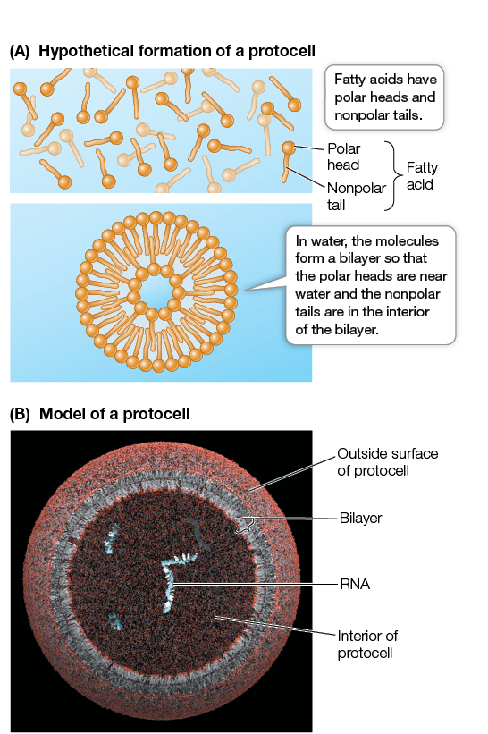

Fatty acid
fatty acid
A long carbon chain carboxylic acid. Fatty acids vary in length and in the number and location of double bonds; three fatty acids linked to a glycerol molecule form a fat molecule, also known as a triacylglycerol or triglyceride.
Definition of a fatty acid
A long carbon chain carboxylic acid. Fatty acids vary in length and in the number and location of double bonds; three fatty acids linked to a glycerol molecule form a fat molecule, also known as a triacylglycerol or triglyceride.
Fatty acid is a type of:
hydrophobic compound
and carboxylic acid.
|
concept map
|
Protocells
(A) In a series of experiments, Jack Szostak and his colleagues mixed fatty acid molecules in water. The molecules formed spherical structures called protocells, with water surrounded by bilayers of fatty acids. (B) A model of a protocell. A portion of the membrane has been cut away to reveal the inside of the protocell and the membrane s bilayer structure. Nutrients and nucleotides pass through the membrane and enter the protocell, where they copy an already present RNA template. The new copies of RNA remain in the protocell.

|
Properties of a fatty acid
-
Charge
-
inherent to all molecules
Structure of a fatty acid
-
Has ion
-
inherent to all carboxylic acids
-
Has region
- end
-
inherent to all organic acids
-
inherent to all organic molecules
-
inherent to all hydrophobic compounds
-
Possesses
-
inherent to all molecules
-
Has part
- hydrocarbon chain
-
inherent to all carboxylic acids
-
inherent to all organic acids
-
inherent to all organic molecules
Functions of a fatty acid
A fatty acid also does…
- Decomposition reaction — energy, a hydrogen peroxide and an oxygen molecule are converted to another oxygen molecule, pyruvate and a water molecule in an active site. Here, the hydrogen peroxide is a reactant.
- Decomposition reaction — energy, a fatty acid and an oxygen molecule are converted to a chemical and an organic molecule in an active site. Here, the fatty acid is a reactant.
- Decomposition reaction — energy, a fatty acid and an oxygen molecule are converted to a chemical and pyruvate in an active site. Here, the fatty acid is a reactant.
- Decomposition reaction — energy, a fatty acid and an oxygen molecule are converted to a chemical and an organic molecule in an active site. Here, the fatty acid is a reactant.
- Beta oxidation — activation energy and a fatty acid are converted in a cell to an acetyl CoA, a FADH2, free-energy and an NADH at an active site. Here, the fatty acid is a reactant.
- Beta oxidation — activation energy and a fatty acid are converted in a cell to a FADH2, free-energy and an NADH. Here, the fatty acid is a reactant.
- Decomposition reaction — energy, a hydrogen peroxide and an oxygen molecule are converted to another oxygen molecule, pyruvate and a water molecule in an active site. Here, the hydrogen peroxide is a reactant.
Variants
Further reading
- 3.3 Lipids Are Defined by Their Solubility Rather Than by Chemical Structure
- 4.3 Cells Originated from Their Molecular Building Blocks
- 6.0 Cell Membranes